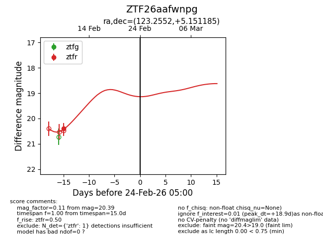
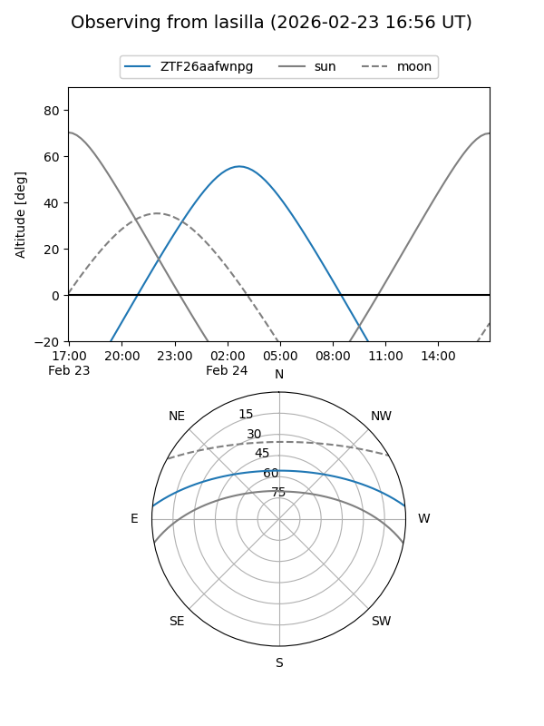
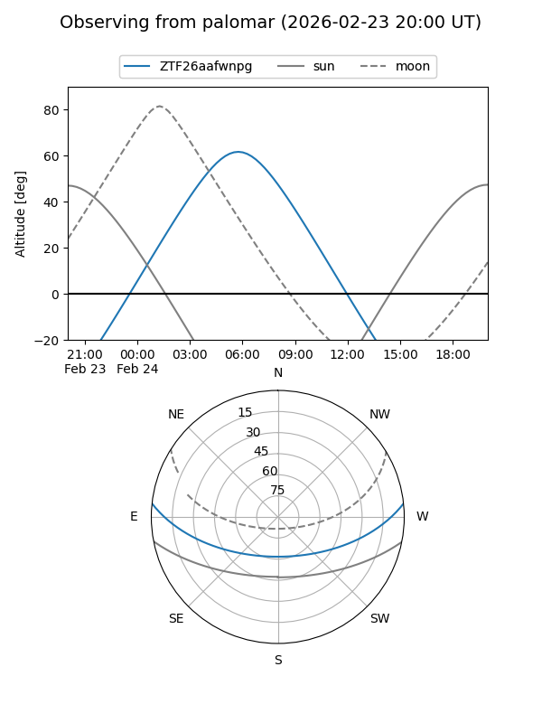

ZTF26aafwnpg
Target ZTF26aafwnpg at 2026-02-24 09:08
Aliases and brokers:
FINK: link
Lasair: link
ALeRCE: link
alt names
ZTF26aafwnpg (ztf,fink_ztf)
Coordinates:
equatorial (ra, dec) = 123.2552,+5.15119
equatorial (HMS+DMS) = 08:13:01.24,+05:09:04.27
galactic (l, b) = (217.7302,+20.47812)
Flags:
Photometry:
last ztfr=20.39
1 ztfr detections
Lightcurve

Visibility


Additional plots